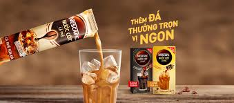

1.PHÚC LONG
Thương hiệu Phúc Long Coffee & Tea được biết đến với tên gọi “Trà sữa Phúc Long” được truyền tai qua với nhiều giới trẻ,
và đến nay, hệ thống Phúc Long ngày càng phát triển và hệ thống cửa hàng, kios đang dần được gia tăng tại các vị trí đắc địa trong trung tâm Hồ Chí Minh,
các hệ thống Winmart, các mặt bằng đẹp ở các trục đường giao thông chính.
2.TRUNG NGUYÊN LEGEND
Mục đích tối hậu duy nhất của sự tiến hoá văn minh nhân loại cũng chỉ là để đạt tới sự đồng nhất, thống nhất, hợp nhất và đại đồng nhân loại trong một cuộc sống thái bình, hoà bình, hạnh phúc, trường tồn và miên viễn. Đây chính là cơ hội và cũng chính là Thiên Mệnh vĩ đại định sẵn cho dân tộc Việt của chúng ta!
3.NESCAFE
Vào năm 1929, do hậu quả của Cuộc khủng hoảng Phố Wall, chính phủ Brazil ngỏ ý muốn Nestlé tìm ra giải pháp cho một lượng lớn cà phê bị dư thừa ở Brazil. Và Nestlé đã chấp nhận thử thách này.
Chuyên gia cà phê Max Morgenthaler có nhiệm vụ pha một tách cà phê thơm ngon chỉ đơn giản bằng cách rót thêm nước. Max và nhóm của anh ấy đã làm việc cật lực với mong muốn tìm ra một cách thức mới để pha cà phê uống liền mà vẫn giữ nguyên hương vị tự nhiên của các loại cà phê. Năm 1938, họ đã tìm thấy câu trả lời và NESCAFÉ được sinh ra từ đó. Tên gọi này xuất phát từ ba chữ cái đầu tiên của Nestlé và nối tiếp bằng chữ "café", NESCAFÉ trở thành thương hiệu cà phê mới.
